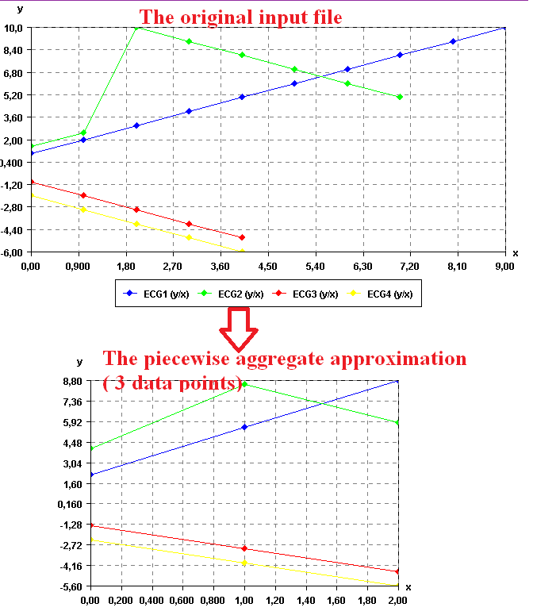

Calculate the piecewise aggregate approximation of time series (SPMF documentation)
This example explains how to calculate the piecewise aggregate approximation of a time series using the SPMF open-source data mining library.
How to run this example?
- If you are using the graphical interface, (1) choose the "Visualize_time_series" algorithm, (2) select the input file "contextSAX.txt", (3) set the separator to the comma ',' (4) set the number of segment to 3, and then (5) click "Run algorithm".
- If you want to execute this example from the command line,
then execute this command:
java -jar spmf.jar run Calculate_piecewise_aggregate_approx_of_time_series contextSAX.txt output.txt 3 ,
in a folder containing spmf.jar and the example input file contextSAX.txt. - If you are using the source code version of SPMF, to run respectively this example, launch the file "MainTestPAAFromFileToFile.java"in the package ca.pfv.SPMF.tests.
What is this algorithm?
Calculating the piecewise aggregate approximation (PAA) of a time series is a popular and simple way of reducing the number of data points in a time series (a way of doing dimensionality reduction).
The idea is very simple. Let's say that a time series contains n data points, and that we want to reduce the time series to w data points, such that w < n. The PAA representation of the time series with w segments is obtained by performing the following process. The time series is divided into w segments and each segment is replaced by the average of its data points.
What is the input of this algorithm?
The input is one or more time series. A time series is a sequence of floating-point decimal numbers (double values). A time-series can also have a name (a string).
Time series are used in many applications. An example of time series is the price of a stock on the stock market over time. Another example is a sequence of temperature readings collected using sensors.
For this example, consider the four following time series:
| Name | Data points |
| ECG1 | 1,2,3,4,5,6,7,8,9,10 |
| ECG2 | 1.5,2.5,10,9,8,7,6,5 |
| ECG3 | -1,-2,-3,-4,-5 |
| ECG4 | -2.0,-3.0,-4.0,-5.0,-6.0 |
This example time series database is provided in the file contextSAX.txt of the SPMF distribution.
In SPMF, to read a time-series file, it is necessary to indicate the "separator", which is the character used to separate data points in the input file. In this example, the "separator" is the comma ',' symbol.
To calculate the piecewise aggregate approximation of a time series, it is necessary to provide a number of segments w, which is the number of data points to be output for each time series. In this example, this parameter will be set to 4 data points. Thus, the piecewise aggregate approximation will be calculated for each of the above time series to produce 4 data points.
What is the output?
The output is the piecewise aggregate approximation of each time series received as input. Let's say that a time series contains n data points, and that we want to reduce the time series to w data points, such that w < n. The PAA representation of the time series with w segments is obtained by performing the following process. The time series is divided into w segments and each segment is replaced by the average of its data points.
For example, in the above example, if the number of segments (data points) is set to 4 data points, the result is:
| Name | Data points |
| ECG1_PAA | 2.2,5.500000000000001,8.799999999999999 |
| ECG2_PAA | 3.999999999999999,8.500000000000002,5.875 |
| ECG3_PAA | -1.4000000000000001,-3.0,-4.6 |
| ECG4_PAA | -2.4,-4.000000000000001,-5.599999999999999 |
To see the result visually, it is possible to use the SPMF time series viewer, described in another example of this documentation. Here is the result:

It is possible to see that the number of data points has been reduced while still keeping the shape of the original curve for each time series.
Note that, the implementation of PAA applies PAA independently on each time series. Thus, as seen above, if the time series do not contain the same number of data points, they may not be aligned anymore after applying the PAA transformation. For real applications though, most time series database will contains time series having the same number of data points. So this should not be an issue.
Input file format
The input file format used by this algorithm is defined as follows. It is a text file. The text file contains one or more time series. Each time series is represented by two lines in the input file. The first line contains the string "@NAME=" followed by the name of the time series. The second line is a list of data points, where data points are floating-point decimal numbers separated by a separator character (here the ',' symbol).
For example, for the previous example, the input file is defined as follows:
@FILETYPE="Time series database"
@SOURCE="SPMF SOFTWARE https://philippe-fournier-viger.com/spmf/"
@NAME=ECG1
1,2,3,4,5,6,7,8,9,10
@NAME=ECG2
1.5,2.5,10,9,8,7,6,5
@NAME=ECG3
-1,-2,-3,-4,-5
@NAME=ECG4
-2.0,-3.0,-4.0,-5.0,-6.0
The first two lines are metadata indicating the type of file and the source of the data. Then, the following lines are the data. Consider the first two lines of data. It indicates that the first time series name is "ECG1" and that it consits of the data points: 1, 2, 3, 4, 5, 6, 7, 8, 9, and 10. Then, three other time series are provided in the same file, which follows the same format.
Output file format
The output file format is the same as the input format.
@FILETYPE="Time series database"
@SOURCE="SPMF SOFTWARE https://philippe-fournier-viger.com/spmf/"
@NAME=ECG1_PAA
2.2,5.500000000000001,8.799999999999999
@NAME=ECG2_PAA
3.999999999999999,8.500000000000002,5.875
@NAME=ECG3_PAA
-1.4000000000000001,-3.0,-4.6
@NAME=ECG4_PAA
-2.4,-4.000000000000001,-5.599999999999999
Where can I get more information about the moving average?
The concept of Piecewise Aggregate Approximation is described in the paper of Lin et al. (2007):
Lin, J., Keogh, E., Wei, L., Lonardi, S.: Experiencing SAX: a novel symbolic representation of time series. Data Mining and Knowledge Discovery 15, 107–144 (2007)